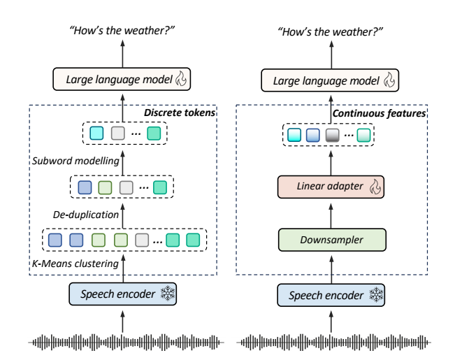
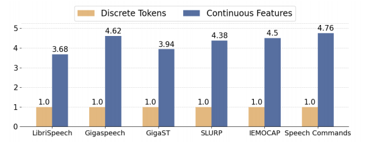
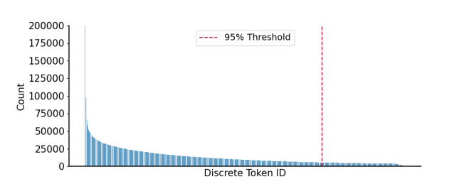
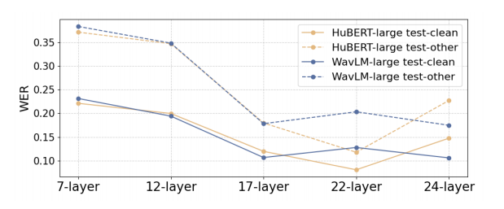

A Comparative Study of Discrete Speech Tokens for Semantic-Related Tasks with Large Language Models paper¶
目标¶
比较在SLM任务中, 使用离散token和连续token的优劣势
离散和连续在论文中的定义¶

- 由feature extractor输出的token经过线性变化后直接使用的方式称为连续
- 经过VQ和RVQ处理后再送入后续模型的token处理方式称为离散。（离散是token取值空间变得离散, 只能取有限个数的值。 离散值数量上界： \(V_{upper\_bound} = \prod_i code\_num\_of\_layer_i\)）
具体配置¶
contribution¶
- 首个在一些语义相关任务上对比连续和离散token表征的论文 - Automatic Speech Recognition (ASR) - Phoneme Recognition (PR) - Keyword Spotting (KS) - Spoken Intent Classification (IC) - Speech Translation (ST) - Emotion Recognition (ER)
- 对比维度中包含训练效率和数据规模。为其他任务的模型选择提供了较好的insight
- 深入分析揭示了导致连续和离散表征的任务的性能差异的原因。(分析感觉不太够)
去重怎么做？¶
- 特征表示去重
- 对语音特征向量进行聚类和去重 - 使用余弦相似度或欧氏距离计算特征向量间的相似度 - 设置相似度阈值，将高度相似的语音token合并或删除- 语音片段去重 - 基于声学特征的相似性分析 - 使用动态时间规整算法(DTW)计算语音片段间的相似度 - 对连续或高度相似的语音片段进行合并或删除
- token级别去重策略 - 对连续重复的语音token进行压缩 - 例如，连续5个相同的语音token可以压缩为1个 - 保留基本语义的同时减少冗余信息
- 统计学方法 - 计算每个语音token的出现频率 - 根据频率设置去重阈值 - 移除低频或高频的冗余token
- 上下文相关去重 - 考虑语音token的上下文语境 - 仅在上下文不重要时进行去重操作 - 避免删除对语义至关重要的重复信息
数据与训练¶
|表征|音频采样率|centroids|BPE vocabulary size|downsampling rate|| |-|-|-|-|-| |离散|16KHz|2000|6000|-| |连续|16KHz|-|-|2|
实验结果与结论¶
- 离散表征中K-menas centriods数量和BPE词表大小对ASR任务的识别结果的影响
| SSL model | Manipulation |Manipulation|WER
 |WER|
|---------------|--------------|------------|
| | K-Means | BPE size | test-clean | test-other |
| Hubert-Large | k=1000 | - | 7.48 | 12.82 |
| | k=2000 | - | 5.02 | 10.55 |
| | k=3000 | - | 5.01 | 10.51 |
| | k=2000 | 4000 | 4.99 | 10.78 |
| | k=2000 | 6000 | 4.56 | 9.79 |
| | k=2000 | 8000 | 5.04 | 11.20 |
| WavLM-large | k=1000 | - | 5.33 | 10.54 |
| | k=2000 | - | 5.04 | 10.11 |
| | k=3000 | - | 5.03 | 10.34 |
| | k=2000 | 4000 | 4.88 | 10.62 |
| | k=2000 | 6000 | 4.72 | 10.45 |
| | k=2000 | 8000 | 4.62 | 10.82 |
结论：
|WER|
|---------------|--------------|------------|
| | K-Means | BPE size | test-clean | test-other |
| Hubert-Large | k=1000 | - | 7.48 | 12.82 |
| | k=2000 | - | 5.02 | 10.55 |
| | k=3000 | - | 5.01 | 10.51 |
| | k=2000 | 4000 | 4.99 | 10.78 |
| | k=2000 | 6000 | 4.56 | 9.79 |
| | k=2000 | 8000 | 5.04 | 11.20 |
| WavLM-large | k=1000 | - | 5.33 | 10.54 |
| | k=2000 | - | 5.04 | 10.11 |
| | k=3000 | - | 5.03 | 10.34 |
| | k=2000 | 4000 | 4.88 | 10.62 |
| | k=2000 | 6000 | 4.72 | 10.45 |
| | k=2000 | 8000 | 4.62 | 10.82 |
结论： - 离散表征的码本大小增加会提升性能。
讨论： 为什么要做离散化？（这个问题需要调研更多关于VQ的论文来回答） 但是离散化后的学习空间一定是变小了。 - 学习空间变小，易于学习（和模型的拟合能力会相关） - 离散表征相对于连续表征有量化损失，没有连续表征的能力强。 - 增大codebook实际上是让离散表征更加靠近连续表征。 - 模型能力是否会被离散化约束。（LLM选择离散化是因为文本这种符号化信息本身是离散的，并不代表transformer结构在处理更善于处理离散化信息相对于连续信息） - 当语音训练数据够多时，借助LLM时是否还需要进行离散化？
不同任务上两种特征提取模型的结果对比
| SSL model | Token type | ASR (WER) Librispeech|ASR (WER) Gigaspeech | PR (PER) | ST (BLEU ) | KS (ACC) | IC (ACC) | ER (ACC) |
|----------|------------|------------|-----------|------------|-----------|-----------|-----------|
| HuBERT-Large | Discrete | 4.56 / 9.79 | 19.40 | 9.69 | 22.75 / 20.14 | 93.70 / 93.85 | 57.04 | 38.65 |
| WavLM-Large | Discrete | 4.72 / 10.45 | 16.34 | 9.64 | 24.62 / 21.22 | 92.87 / 92.45 | 59.96 | 37.98 |
| HuBERT-Large | Continuous | 4.91 / 6.43 | 17.45 | 12.84 | 26.63 / 25.42 | 95.38 / 95.70 | 76.84 | 56.72 |
| WavLM-Large | Continuous | 2.92 / 4.61 | 13.96 | 12.62 | 29.44 / 28.12 |97.76 / 97.36 |81.35 | 59.45 |
) | KS (ACC) | IC (ACC) | ER (ACC) |
|----------|------------|------------|-----------|------------|-----------|-----------|-----------|
| HuBERT-Large | Discrete | 4.56 / 9.79 | 19.40 | 9.69 | 22.75 / 20.14 | 93.70 / 93.85 | 57.04 | 38.65 |
| WavLM-Large | Discrete | 4.72 / 10.45 | 16.34 | 9.64 | 24.62 / 21.22 | 92.87 / 92.45 | 59.96 | 37.98 |
| HuBERT-Large | Continuous | 4.91 / 6.43 | 17.45 | 12.84 | 26.63 / 25.42 | 95.38 / 95.70 | 76.84 | 56.72 |
| WavLM-Large | Continuous | 2.92 / 4.61 | 13.96 | 12.62 | 29.44 / 28.12 |97.76 / 97.36 |81.35 | 59.45 |
- 小模型上，大多下游任务连续表征都好于离散表征。（Phoneme Recognition除外）
- 连续表征上WavLM优于Hubert
- WavLM-Large和continous结合的方式在在大多数任务上效果都是最优
收敛速度对比

- 离散token相对于连续token收敛快很多。
讨论： - 离散token训练收敛快是合理的 - 增加连续token的收敛速度的策略：先用离散的训收敛, 然后去除VQ模块, 继续用连续token训练。
token利用不平衡性分析

- 论文指出离散后的token有严重的数据不平衡问题(长尾效应严重)
- 但是提出的针对这种问题的缓解办法是使用连续表征(听起来不合理)
讨论： - 离散是连续的一种近似。离散在单个token上的不平衡性应该会对应在连续token表征的空间区域上的不平衡性。可能BPE这种方式能够对长尾效应有一定的缓解。
不同层级特征对应的WER

- 不同层捕获的信息重点可能不同, 导致适配不同的任务
讨论：
- 逐层分析（有点道理，可能不同的层在关注不同的信息，而特定的信息可能是适配于特定任务的）。那更合理的额方式应该是尝试对多层进行加权和，对权重采用grid search的方式来探索合适的权重配比（可能需要训练不同层特征的adaptor）